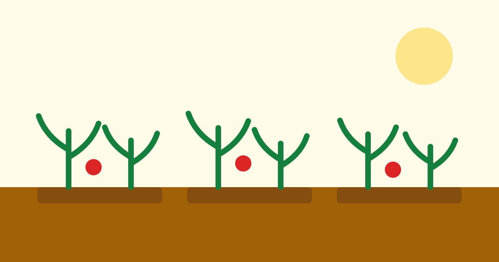

Programas em execução
Semear Saber
Reforço escolar no contraturno para estudantes do 1º ao 5º ano, com foco em
alfabetização e raciocínio lógico.
Núcleo do Semear Saber na comunidade do Alto do Pascoal.
Objetivo
Reduzir a defasagem de aprendizagem acumulada e diminuir a evasão escolar no
ensino fundamental I.
Público atendido
Crianças de 6 a 11 anos matriculadas na rede pública municipal.
Resultados de 2025
- 412 crianças atendidas em 7 núcleos
- 78% de avanço no nível de leitura medido em dois ciclos
- Evasão escolar reduzida de 14% para 6% entre os participantes
Como participar como voluntário
Buscamos educadores, estudantes de licenciatura e profissionais dispostos a
dedicar quatro horas semanais em turno da tarde.
Mesa Cheia
Segurança alimentar por meio de distribuição de cestas, hortas comunitárias e
oficinas de aproveitamento integral.

Horta comunitária mantida pelas famílias do projeto Mesa Cheia.
Objetivo
Garantir alimentação regular às famílias em insegurança alimentar e construir
autonomia produtiva no médio prazo.
Público atendido
Famílias com renda per capita inferior a meio salário mínimo.
Resultados de 2025
- 1.180 cestas distribuídas por mês
- 5 hortas comunitárias implantadas e autogeridas
- 36 oficinas de aproveitamento integral realizadas
Como participar como voluntário
Precisamos de apoio na logística de montagem e entrega das cestas aos sábados
pela manhã.
Mãos que Criam
Formação técnica curta e apoio à formalização de pequenos empreendedores do
território.
Turma de costura industrial, trilha de 40 horas.
Objetivo
Ampliar a renda familiar por meio de qualificação profissional e acesso a
crédito produtivo orientado.
Público atendido
Pessoas acima de 18 anos, com prioridade para mulheres chefes de família.
Resultados de 2025
- 264 concluintes nas trilhas formativas
- 61% com renda própria seis meses após a conclusão
- 89 microempreendedores individuais formalizados
Como participar como voluntário
Abrimos vagas para instrutores técnicos e mentores de negócio, em encontros
quinzenais.
Raiz Cultural
Oficinas de música, dança e audiovisual como ferramenta de permanência escolar
e fortalecimento identitário.
Oficina de percussão do Raiz Cultural, núcleo Casa Amarela.
Objetivo
Usar a produção cultural como porta de entrada para o acompanhamento
socioeducativo de adolescentes.
Público atendido
Adolescentes de 12 a 17 anos.
Resultados de 2025
- 190 adolescentes em oficinas regulares
- 12 apresentações públicas realizadas
- 3 curtas-metragens produzidos pelos próprios participantes
Como participar como voluntário
Recebemos músicos, produtores culturais e editores de vídeo para oficinas
semanais.